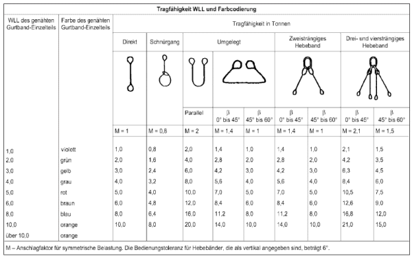
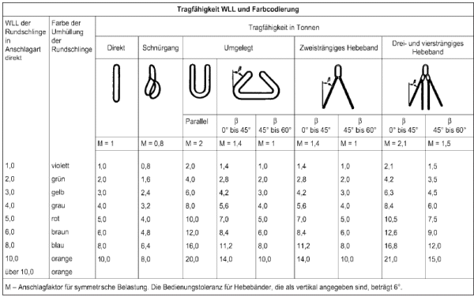

Die nachfolgenden Tabellen stellen die Tragfähigkeit der unterschiedlichen Anschlagmittel dar. Nicht jede in den nachfolgenden Tabellen genannte Anschlagart ist für jeden Lastenanschlag geeignet. Die Eignung ist in jedem Einzelfall zu prüfen. Die Nenntragfähigkeit eines Einzel-Hebebandes entspricht der Tragfähigkeit in der Anschlagart "direkt" mit einem Neigungswinkel von 0°.
Die Benennung der Anschlagarten entspricht DIN 30785 „Anschlagen im Hebezeugbetrieb, Arten und Benennungen“ (zu Anschlagarten siehe auch EN 13414-2)“.
Die Tabelle im Bild 7-1 gilt für flachgewebte Hebebänder aus Chemiefasern mit verstärkten Schlaufen entsprechend der Form B nach DIN EN 1492-1.
Es bedeuten:
direkt: Eine Schlaufe wird in die Lastaufnahmeeinrichtung eingehängt.
Die andere Schlaufe wird an der Last befestigt.
geschnürt: Das Schlaufenhebeband wird so um die Last geführt, dass eine Schlaufe durch die andere gezogen und die freie Schlaufe in die Lastaufnahmeeinrichtung eingehängt wird. Das Band kann einfach oder doppelt geschnürt sein.
"Doppelt geschnürt" bedeutet, dass das Band zweimal um die Last geführt und dann durch die Gegenschlaufe gezogen ist.
umgelegt: Das Schlaufenhebeband wird einmal um die Last gelegt, wobei beide Schlaufen in die Lastaufnahmeeinrichtung eingehängt werden.
umschlungen: Das Schlaufenhebeband wird zweimal um die Last gelegt, wobei beide Schlaufen in die Lastaufnahmeeinrichtung eingehängt werden.
direkt: Die zwei Schlaufenhebebänder werden mit jeweils einer Schlaufe in die Lastaufnahmeeinrichtung eingehängt.Die beiden anderen Schlaufen werden an der Last befestigt.
geschnürt: Beide Schlaufenhebebänder werden um die Last geführt. An jedem Schlaufenhebeband wird eine Schlaufe durch die andere gezogen. Die beiden freien Schlaufen werden in die Lastaufnahmeeinrichtung eingehängt.
Für Hebebänder aus Chemiefasern mit Beschlagteilen entsprechend den Formen C und Cr nach DIN EN 1492-1 gilt die Tabelle nach Abschnitt 7.

Bild 7-1: Tragfähigkeit WLL und Farbcodierung für flachgewebte Hebebänder aus Chemiefasern mit verstärkten Schlaufen entsprechend der Form B nach DIN EN 1492-1
Die Tabelle im Bild 7-2 gilt für flachgewebte Endloshebebänder aus Chemiefasern der Form A nach DIN EN 1492-1 und für Rundschlingen aus Chemiefasern nach DIN EN 1492-2.
Es bedeuten
direkt: Das Endloshebeband bildet zwei parallel laufende Stränge. Das eine durch die Umlenkung gebildete Ende wird in die Lastaufnahmeeinrichtung eingehängt; das andere durch die Umlenkung gebildete Ende wird an der Last befestigt.
geschnürt: Das Endloshebeband bzw. die Rundschlinge wird mit parallel liegenden Strängen um die Last geführt. Das eine durch die Umlenkung gebildete Ende wird durch das andere gezogen. Das freie Ende wird in die Lastaufnahmeeinrichtung eingehängt. Das Endloshebeband bzw. die Rundschlinge kann einfach oder doppelt geschnürt sein.
"Doppelt geschnürt" bedeutet, dass das Endloshebeband bzw. die Rundschlinge zweimal um die Last geführt und dann das durch die Umlenkung gebildete Ende in die Lastaufnahmeeinrichtung eingehängt ist.
umgelegt: Das Endloshebeband bzw. die Rundschlinge wird um die Last gelegt, entweder so, dass die Last in dem geschlossenen Endloshebeband bzw. der geschlossenen Rundschlinge liegt oder so, dass das Endloshebeband bzw. die Rundschlinge zwei parallele Stränge bildet, die um die Last geführt werden. Das Endloshebeband bzw. die Rundschlinge bzw. die durch die Umlenkung gebildeten Enden werden in die Lastaufnahmeeinrichtung eingehängt.
direkt: Die Endloshebebänder bzw. Rundschlingen bilden jeweils zwei parallel laufende Stränge. Die zwei Endloshebebänder bzw. Rundschlingen werden jeweils mit einem durch die Umlenkung gebildeten Ende in die Lastaufnahmeeinrichtung eingehängt. Die beiden anderen durch die Umlenkung gebildeten Enden werden an der Last befestigt. Die Endloshebebänder bzw. Rundschlingen sind nicht um die Last gelegt.
geschnürt: Die zwei Endloshebebänder bzw. Rundschlingen werden jeweils mit parallelen Strängen um die Last geführt. An jedem Endloshebeband bzw. jeder Rundschlinge wird ein durch die Umlenkung gebildetes Ende durch das andere gezogen. Die freien Enden werden in die Lastaufnahmeeinrichtung eingehängt.

Bild 7-2: Tragfähigkeit WLL und Farbcodierung für Endloshebebänder aus Chemiefasern der Form A nach DIN EN 1492-1 und für Rundschlingen aus Chemiefasern nach DIN EN 1492-2